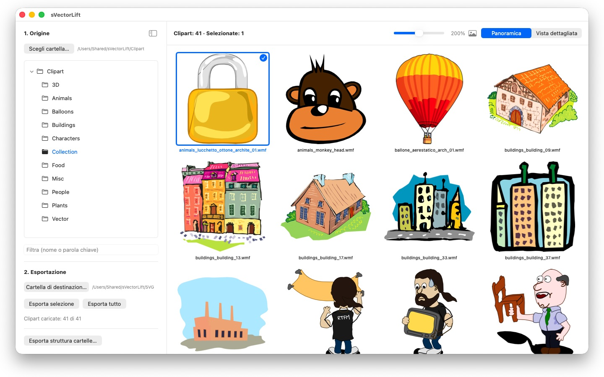
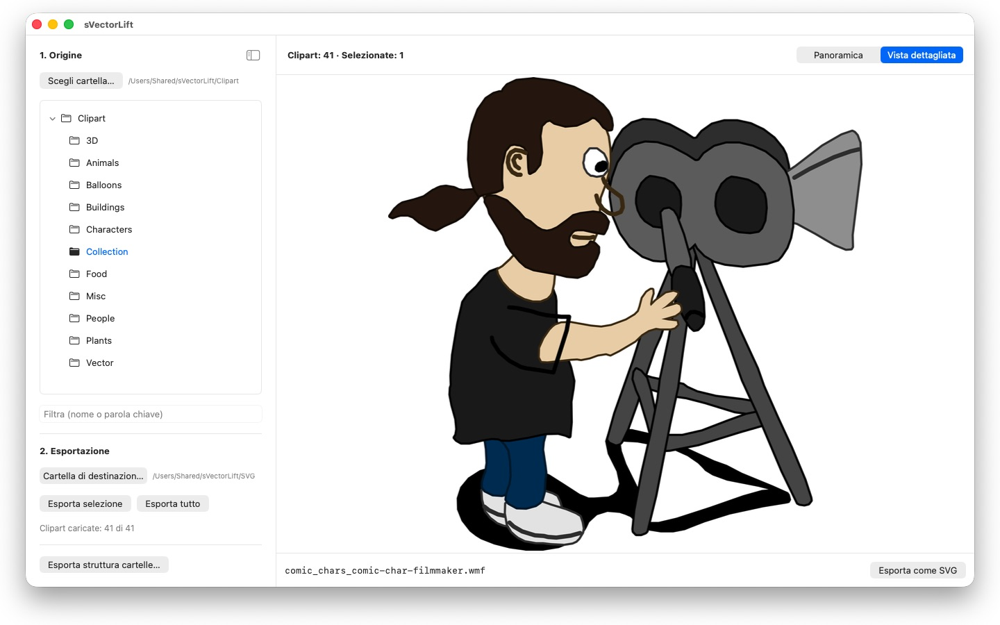

Migliaia di clipart su quei vecchi CD di CorelDRAW, chiuse in formati che nessuno apre più. sVectorLift le trasforma in grafica con cui puoi lavorare oggi.



Da qualche parte sullo scaffale c'è un CD pieno di clipart che hai comprato anni fa. I file ci sono ancora, ma nessun programma sul tuo Mac li apre.
24 lingue: Deutsch · English · Español · Français · Italiano · Nederlands · Português · Svenska · Norsk · Suomi · Polski · Čeština · Hrvatski · Magyar · Română · Türkçe · Русский · Українська · فارسی · ไทย · 日本語 · 한국어 · 简体中文 · 繁體中文
sVectorLift rimette al lavoro quella grafica. Ricostruisce ogni disegno come vero SVG: nitido a qualsiasi dimensione, modificabile, pronto da usare in Illustrator, Affinity, Inkscape, Sketch, Figma — o sul tuo sito. Non solo di nuovo visibile. Di nuovo utilizzabile. È questo il «lift» del nome: vecchia grafica vettoriale, sollevata al livello degli strumenti con cui lavori oggi.
COSA APRE
- Documenti CorelDRAW (.cdr), dalla versione 6 alla 9
- Corel Binary Meta File (.cmx) — anche la vecchia variante CDRX, che altri strumenti si rifiutano di leggere
- Windows Metafile (.wmf)
- Computer Graphics Metafile (.cgm)
- QuickDraw 3D Metafile (.3dm, .3dmf), resi come immagine
- Scalable Vector Graphics (.svg), mostrati direttamente
Molti file con estensione .cdr non sono affatto documenti CorelDRAW, ma CMX: è esattamente per questo che i convertitori abituali si fermano. sVectorLift legge entrambi.
sVectorLift è pensato per le raccolte di clipart: disegni, simboli, illustrazioni. Non è un programma di impaginazione e non vuole ricostruire brochure di più pagine o esecutivi di stampa.
UNA VERA CONVERSIONE VETTORIALE
Qui non si fotografa un'anteprima. sVectorLift legge il disegno vero e proprio: tracciati e curve di Bézier, colori di riempimento, sfumature, contorni e tratteggi, riempimenti a motivo e texture, foto incorporate e oggetti di testo. Ne escono dati vettoriali autentici, che puoi scalare, ricolorare e modificare — non l'immagine di un disegno.
Le immagini puramente raster vengono invece esportate come PNG, così non si perde nulla.
Ti serve un'immagine invece di una grafica vettoriale? «Esporta come PNG» ed «Esporta come JPG» trasformano qualsiasi disegno in un'immagine, anche i file SVG, nella dimensione che scegli nelle Impostazioni.
SFOGLIARE LA RACCOLTA
- Albero delle cartelle sull'intera raccolta, sottocartelle comprese
- Griglia di anteprime vettoriali nitide, con cursore per la dimensione
- Vista di dettaglio, si sfoglia la cartella con i tasti freccia
- Filtro per nome o parola chiave
- Selezione multipla come in Foto: clic, ⌘-clic, ⇧-clic, selezione a rettangolo, ⌘A
- Apertura di un singolo file direttamente dal Finder («Apri con» o doppio clic)
- Cartelle recenti che ricordano dove eri rimasto: sottocartella e file selezionato
- Esportazione della selezione o dell'intera cartella in un solo passaggio
- Conversione di intere strutture di cartelle, sottocartelle comprese, in un colpo solo: la struttura resta intatta nella cartella di destinazione
- Rinomina, mostra nel Finder, sposta nel Cestino
VELOCE E RIGUARDOSO CON IL TUO MAC
Le anteprime vengono calcolate solo per ciò che stai guardando, in secondo piano e con cache. Le cartelle grandi si aprono subito, invece di bloccarsi per minuti su migliaia di file.
Tutto resta sul tuo Mac. Nessuna connessione di rete, nessun account, nessuna raccolta di dati.
CorelDRAW è un marchio di Corel Corporation. sVectorLift è un'app indipendente e non è affiliata a Corel né approvata da Corel.
- Richiede macOS 14 o versioni successive
- 24 lingue
- Assistenza: SwiftAppsBavaria@gmx.net
Altre app
sCollect
Organizza musica, film, audiolibri, e-book e altre raccolte in una libreria multimediale.
sCollectPlay
Il lettore per la libreria: riproduci musica, film, audiolibri e podcast semplicemente da una cartella, da un file XML di iTunes o da una libreria sCollect.
sCollectPlay Lite
L'edizione essenziale di sCollectPlay: apri semplicemente una cartella, un file XML di iTunes o una libreria sCollect e riproduci musica, film, audiolibri e podcast, con playlist, tracce audio e sottotitoli, rallentatore e avanzamento fotogramma per fotogramma. È aperta sempre una sola fonte alla volta. Il browser a colonne, le playlist personali e l'elenco delle fonti usate di recente sono disponibili solo nella versione completa.
sName2Date
Scrivi la data dal nome del file come data di scatto in foto, filmati e registrazioni audio, così che un file come IMG_20240115_103000.jpg si ordini correttamente in qualsiasi gestore di foto.
sName2Date Lite
L'edizione per un file alla volta: scrivi la data dal nome del file come data di scatto in una foto, un filmato o una registrazione audio, impostala manualmente, porta il nome nella notazione ISO e annulla tutto con ⌘Z, con le stesse capacità di sName2Date, solo senza cartelle intere.
SwiftRename
Dalla scheda di memoria all’archivio: nominare foto e video in base all’ora di scatto, archiviarli per anno, mese o giorno, riconoscere i duplicati — anche in RAW.
sBikeBridge
Analizza le uscite in bici senza caricarle su un portale: importa i file FIT di qualsiasi ciclocomputer che registri in questo formato, oltre a GPX e TCX. Le uscite restano in una libreria propria sul Mac, con mappa, potenza e frequenza cardiaca, foto e note; l'importazione riconosce i duplicati. Indicatori per anno o per mese e filtri per distanza, dislivello e durata rendono le uscite confrontabili. Su richiesta, la mappa è disponibile anche offline.